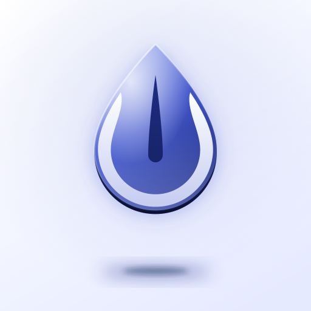
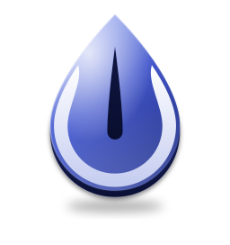

MANA — indigo and white styles
The round 7 logo (same drop, same arms, same centre drop) in six different lift styles, using only deep indigo blues and white. Nothing here is wired into the app yet.
1 · Glass
A luminous indigo glass drop on a deep night-blue tile, with a soft glow and a few stars.1b · Glass, white line
The Glass style with the centre drop in glowing white instead of a dark cut.1c · Glass, warm line
1b with a small warm glow at the foot of the white centre line, like a spark of light on the drop.2 · Pearl
A white pearl drop with indigo rim arms, lifted off a rich indigo tile.3 · Emboss
One soft indigo material: the drop is pressed up out of the tile, and the centre drop is pressed in.4 · Float

The drop hovers above a clean white tile. Its shadow is small and far below, so it feels lifted high.5 · Long shadow
Completely flat colours: a white drop, indigo arms, and one long diagonal shadow that fades into the tile.6 · Liquid glass
A clear frosted drop with a bright edge, floating over soft indigo light. The most modern look.On a dock
Standalone marks

mark-indigo · on whiteon pale indigo
mark-indigo-white-line · on white
mark-indigo-warm-line · on white
mark-white · on indigo
on night